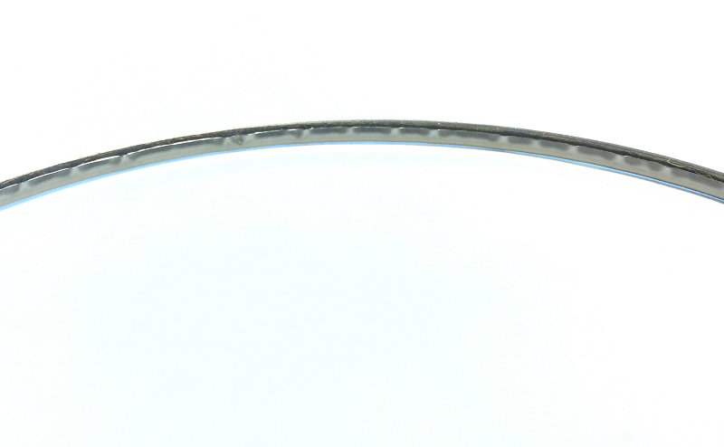

Ruga na Recravação (Wrinkle)
A classificação de ruga é uma medida crítica da qualidade da recravação dupla. O aperto da recravação é frequentemente chamado de "vedação primária" da recravação dupla (sendo a sobreposição a "vedação secundária"). Uma alta porcentagem de ruga pode ser causada por configuração incorreta da recravadeira.
Causas raiz de problemas de Ruga:
- Configuração incorreta da 1ª operação
- Rolamento quebrado
- Operação assimétrica
- Altura do pino incorreta
- Latas e tampas incompatíveis
Como medir a ruga?
Uma recravação sem rugas tem aperto de 100% ou próximo. Uma classificação de alta ruga (ou baixo aperto) é tipicamente de 70% ou menos. A ruga é classificada em resolução de 10%, com recravação normal entre 90-100%.

Como aparece a ruga?
Em corte transversal, uma ruga pode aparecer como uma depressão localizada ou curl no gancho da tampa voltado para fora em direção à borda.
Rugas Reversas
Rugas reversas são dobradas na direção oposta (para cima) e não são tão prejudiciais quanto as rugas normais.